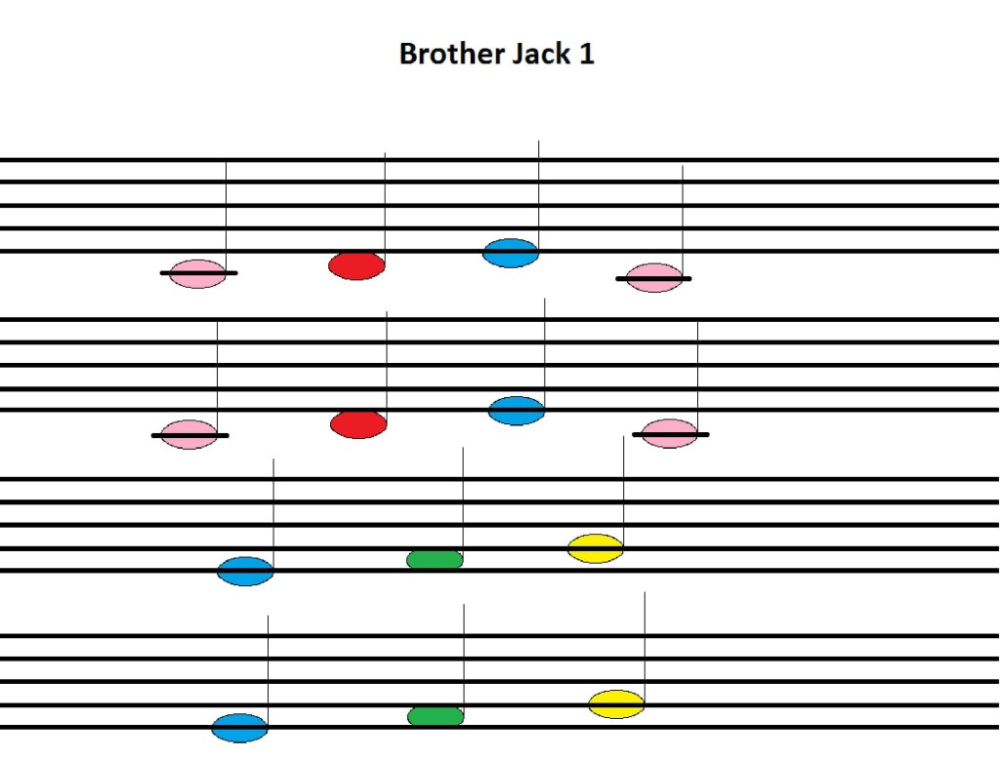

Visual Strategies to Help Special Children Learn the Piano
by Richard Hurley | Feb 22, 2024 | Music Blog | 0 comments
Children with special needs learn better when they can relate their lessons to something visually attractive, say bold colors or shapes that they can easily recognize. It might take several weeks for them to be able to grasp a particular idea clearly, but with adequate patience, it can be turned into an enjoyable experience. That is why therapists often work on designing special music-based interventions that are simple and yet the most helpful for the progress of special children.
To begin with, making them develop an interest in the piano has to be systematic. You can start by associating their favorite things to the very idea of learning how to play music. Colors, simple tunes and hand-eye co-ordination exercises can go a long way in helping them to like and retain what they learn.
If you aren’t too sure of which notes to pick, begin with a simple tune called “Brother Jack.” It just has four to five notes which can be picked up by the child if you follow the right teaching process, which is, to color-code every note. As stated earlier, visual strategies work the best. So, when the child begins to see the link between, say, a pink note on the paper and a key labeled in the same shade of pink, he or she would start to build the logical connection. You have to take it one note or one color at a time. Once you see that the kid is able to relate and hit the same colored key without your assistance, you can move on to the next color/note, work on the combinations and ultimately, be patient till they are able to play the whole tune by themselves. Remember, that the key to success here, is your patience with the child’s speed, interest and ability. So, go ahead and introduce the world of melodious tunes to your little one and help him/her become proficient in playing this amazing musical instrument that will build their confidence and self-esteem.